48.8833° N, 19.2225° E · Donovaly, Nízke Tatry
Poznáš Donovalský Drapák? Možno si bežal Novú Hoľu. Drapák si za sedem rokov vybudoval meno ako jedny z najkrajších horských pretekov na Slovensku. Beh na Novú Hoľu priniesol prvý ročník behu do vrchu s cieľom na 1 370 m n. m. Tento rok spájajú sily.
Donovaly Running Tour je nový bežecký formát, ktorý z oboch pretekov vytvára trojdňovú sériu s celkovým hodnotením — piatkový Prológ, sobotňajší trail a nedeľný kopec, kde sa ide len hore. Dve línie — Classic a Extreme. Výsledné poradie sa počíta súčtom časov. A ak ti séria nesedí? Kľudne príď len na jedny preteky.
Tri etapy, jedno hodnotenie. Piatkový Prológ, sobotňajší trail 10 alebo 20 km a nedeľný beh do vrchu na Novú Hoľu. Vyber si líniu Classic alebo Extreme a zmeraj sa v celkovom poradí. Pre tých, čo chcú viac ako jedny preteky.
Pozri etapy →Nemusíš bežať všetko. Každé preteky fungujú aj samostatne — prihlás sa len na Prológ, len na desiatku alebo len na Novú Hoľu. Žiadny záväzok, žiadne celkové hodnotenie. Proste si príď zabehať.
Pozri preteky →V sobotu sa na tých istých kopcoch koná aj Donovalský Drapák — horské cyklistické preteky s tradíciou siedmich ročníkov. Hobby 22,5 km, Maratón 50 km aj detské kategórie na bajkoch.
donovalskydrapak.sk ↗Drapáčik Krpci od 2 rokov na odrážadlách, kolobežkách aj bicykloch — zadarmo, bez časomiery, s diplomom pre každého. Drapáčik Juniori pre deti 6–15 rokov s časomierou a trofejami.
donovalskydrapak.sk ↗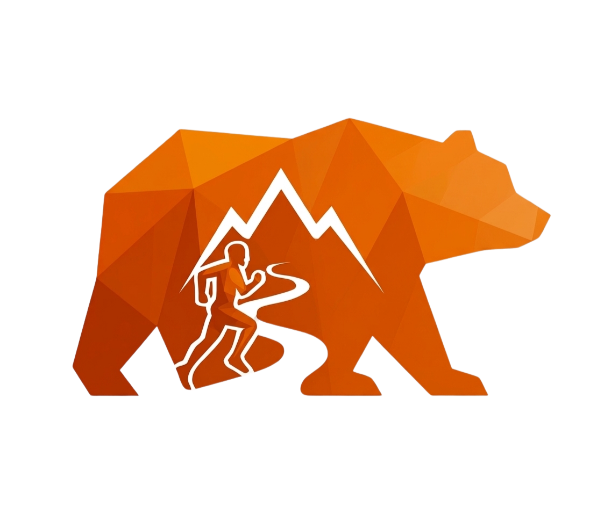
1. ročníkTri etapy, tri rôzne výzvy, dve línie. Running Tour Classic — Prológ, 10 km a Nová Hoľa. Running Tour Extreme — Prológ, 20 km a Nová Hoľa. Celkové poradie v každej línii sa počíta súčtom časov — pri rovnosti rozhoduje záverečná etapa. Netrúfaš si na sériu? Každé preteky fungujú aj samostatne.
Večerný beh centrom Donoval. Rýchly, rovný, atmosférický. Štart pri Park Snow, cieľ pri Donovalskom Pivovare. Ideálny na rozbehnutie nôh pred víkendom.
Hlavné bežecké preteky víkendu. Desiatka pre Classic líniu alebo dvadsiatka pre Extreme. Asfalt, lesné chodníky a kopce, ktoré si zapamätáš. Štart aj cieľ pri Donovalskom Pivovare.
Záverečná etapa Running Tour. Päť kilometrov len hore. Štart pri Park Snow, cieľ na Novej Holi. Lístok na lanovku späť je v cene — nohy ti poďakujú.
Štart všetkých bežeckých kategórií je z centrálneho parkoviska na Donovaloch.
Po štartovom rozbehu sa prechádza na druhú stranu cez cestu smerom na Pavlove lúky. Nasleduje strmý výšľap popod horu na Bully smerom k donovalskému vodojemu, kde je na 5. km občerstvovacia stanica pri Javore.
Pokračuje sa strmým výšľapom po turistickej značke. Cez nádhernú horskú cestičku sa trasa napája na červenú turistickú značku hrebeňovky Donovaly – Kečka. Na tomto mieste sa 10 km trať odpája a smeruje cez Mistríky späť na Donovaly do cieľa.
Usporiadateľ si vyhradzuje právo na toleranciu dĺžky trate ±10 %.
Stiahnuť GPX — Beh 10 kmPrvých 8 km je spoločných s desiatkou — štart z centrálneho parkoviska, výšľap na Pavlove lúky, popod Bully k vodojemu, občerstvovacia stanica pri Javore a strmý výšľap na červenú hrebeňovku.
Na rozcestí na červenej sa 20 km trať oddeľuje a pokračuje ďalej po hrebeni. Cez lúky pri Bulharovej chate nasleduje oddychový zjazd okolo Hrubého vrchu smerom ku Krámu. Malým okruhom späť k donovalskému vodojemu s ďalšou občerstvovacou stanicou. Záver vedie krásnym horským terénom cez technický single trail smerom na Mistríky a cez lúky do cieľa na donovalskom parkovisku.
Usporiadateľ si vyhradzuje právo na toleranciu dĺžky trate ±10 %.
Stiahnuť GPX — Beh 20 kmBeh do vrchu v čistej forme. Štart pri Park Snow Donovaly, cieľ na vrchole Novej Hole (1 370 m n. m.). Päť kilometrov stúpania po spevnených lesných chodníkoch a turistických značkách s prevýšením 470 metrov.
Lístok na lanovku späť na štart je zahrnutý v štartovnom. Vyhlásenie výsledkov behu aj celkové výsledky Donovaly Running Tour 2026 o 12:30 hod.
Stiahnuť GPX — Beh na Novú HoľuČím skôr sa prihlásíš, tým menej zaplatíš. Registrácia prebieha v štyroch cenových vlnách — posledná šanca online je 26. júla, potom už len na mieste do kapacity.
| 1. vlna do 15.6.2026 |
2. vlna do 15.7.2026 |
3. vlna do 26.7.2026 |
Na mieste |
|
|---|---|---|---|---|
| Classic (4km+10km+5km) | 55 € | 65 € | 75 € | 90 € |
| Extreme (4km+20km+5km) | 65 € | 75 € | 85 € | 100 € |
| Preteky | 1. vlna do 15.6.2026 |
2. vlna do 15.7.2026 |
3. vlna do 26.7.2026 |
Na mieste |
|---|---|---|---|---|
| Prológ 4 km | 15 € | 18 € | 20 € | 25 € |
| Drapák 10km beh | 25 € | 30 € | 35 € | 45 € |
| Drapák 20km beh | 30 € | 35 € | 40 € | 55 € |
| Beh na Novú hoľu 5km | 20 € | 25 € | 30 € | 35 € |
Kategórie platia pre obe línie — Classic (4+10+5 km) aj Extreme (4+20+5 km). Celkové poradie sa počíta súčtom časov zo všetkých troch etáp.
| Kategória | Ročníky | Vek |
|---|---|---|
| M / Ž | 1987–2011 | 19–39 r. |
| M40 / Ž40 | 1977–1986 | 40–49 r. |
| M50 / Ž50 | 1967–1976 | 50–59 r. |
| M60 / Ž60 | 1966 a skôr | 60+ r. |
Rovnaké kategórie platia aj pre jednotlivé bežecké preteky — Prológ 4 km, Beh 10 km, Beh 20 km a Beh na Novú Hoľu 5 km.
| Kategória | Ročníky | Vek |
|---|---|---|
| M / Ž | 1987–2011 | 19–39 r. |
| M40 / Ž40 | 1977–1986 | 40–49 r. |
| M50 / Ž50 | 1967–1976 | 50–59 r. |
| M60 / Ž60 | 1966 a skôr | 60+ r. |
⚠️ Minimálny počet pretekárov v kategórii
Pre otvorenie a samostatné vyhodnotenie každej vekovej kategórie je potrebná účasť minimálne 5 pretekárov s riadne zaplateným štartovným (prihlásených v online systéme k dátumu uzávierky online registrácií 26. 7. 2026). Ak sa v danej kategórii nenaplní tento minimálny počet, kategória sa automaticky spája s najbližšou mladšou vekovou kategóriou (v prípade najmladšej kategórie s najbližšou staršou). Pretekári tak neprichádzajú o možnosť súťažiť — len sa presúvajú do konkurenčnejšej skupiny.
Drapák nie sú len preteky. Je to víkend v horách s ľuďmi, ktorí to cítia rovnako. Pozri si, ako to vyzeralo minulé roky.
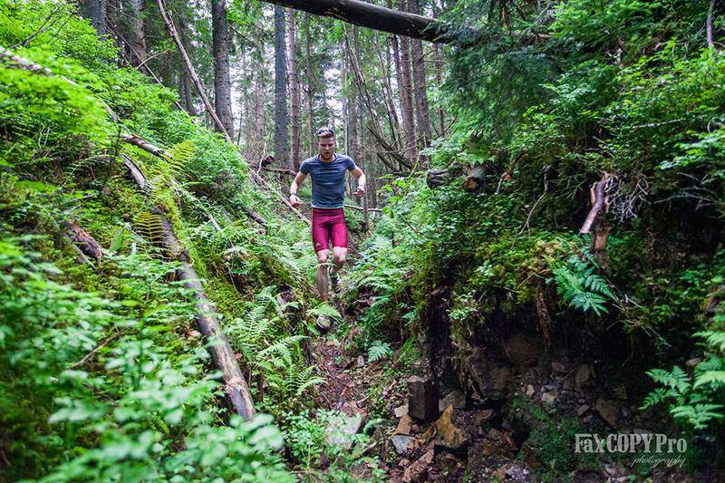
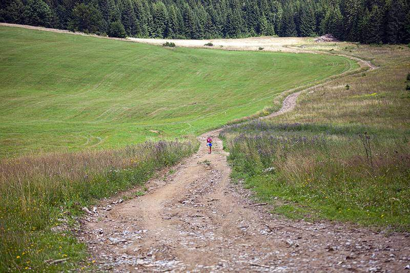
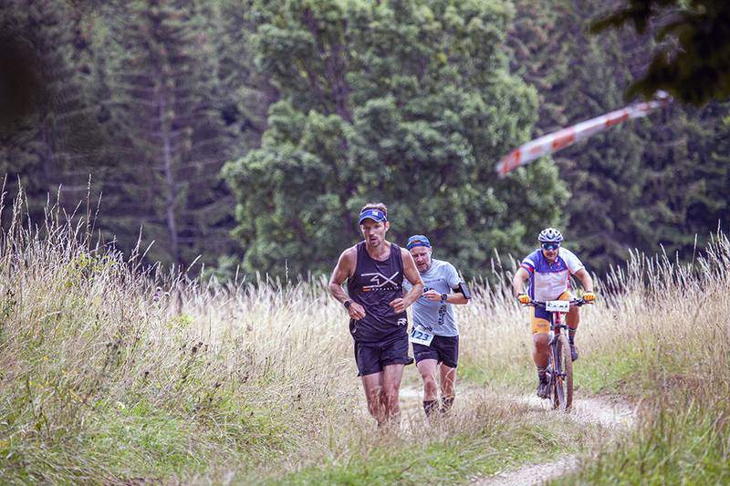
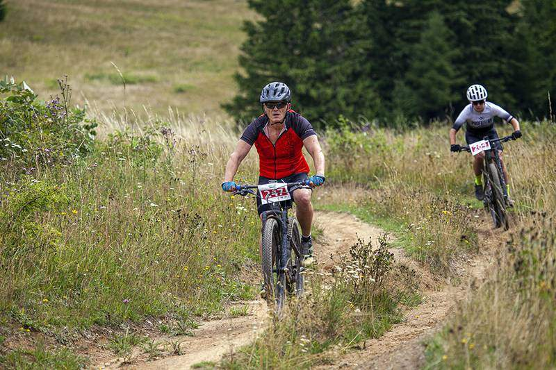
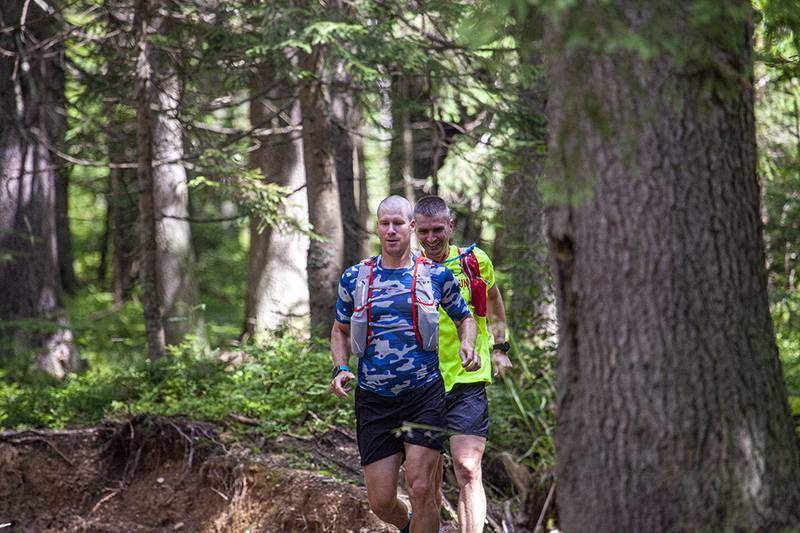
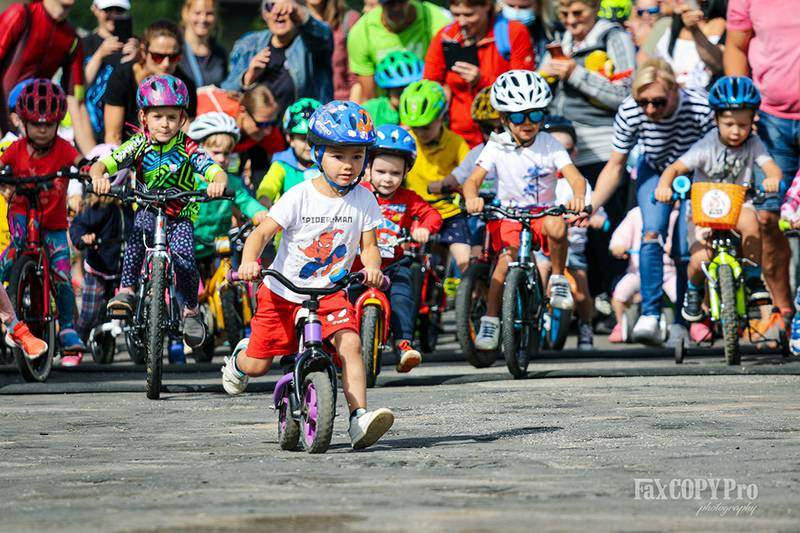
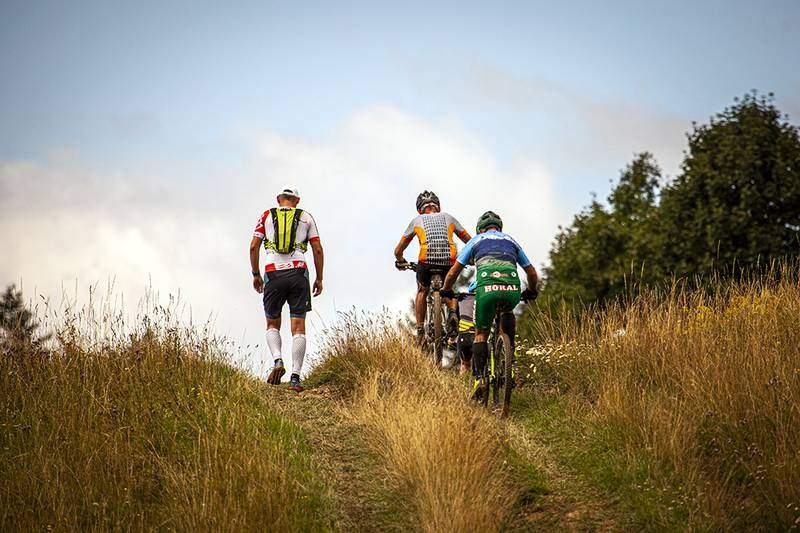
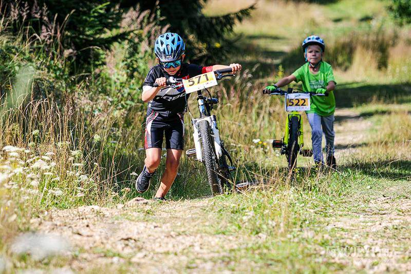
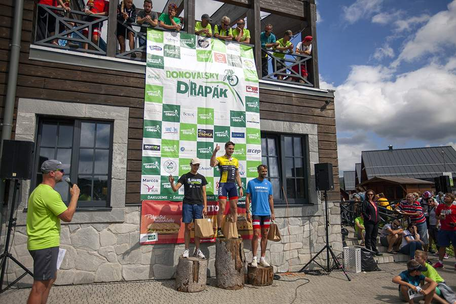
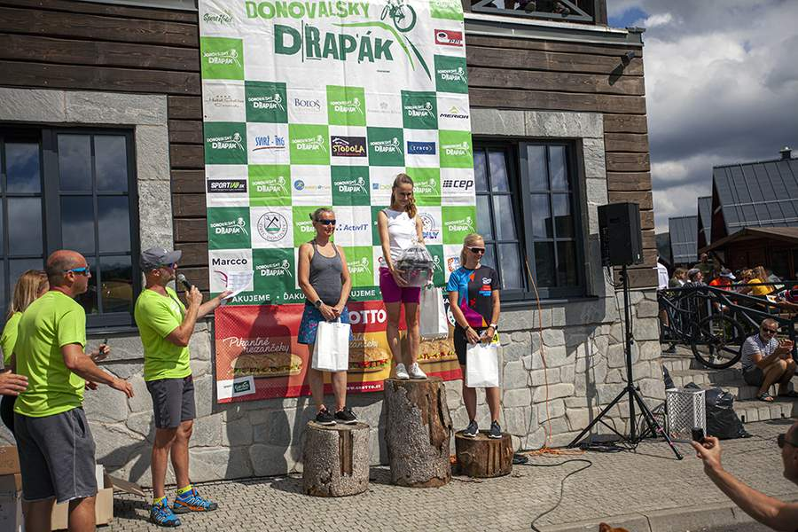
Kancelária pretekov a hlavný stan sú v Donovalskom Pivovare — Donovaly 95, 976 39 Donovaly. Štarty sú pri Park Snow Donovaly a na centrálnom parkovisku pri pivovare.
Donovaly sú dostupné autom z Banskej Bystrice (25 min) aj z Ružomberka (35 min).